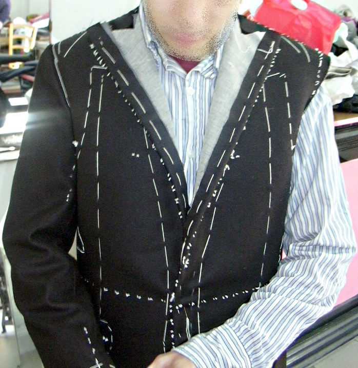

Meaning of the term Bespoke tailoring or custom tailoring is clothing made to an individual buyer's specifications by a tailor.
The word bespoke derives from the verb bespeak, to speak for something, in the specialised meaning of "to give order for it to be made." Fashion terminology reserves bespoke for individually patterned and crafted men's clothing, analogous to women's haute couture, as opposed to mass-manufactured ready-to-wear (off-the-peg or off-the-rack). The term originated on Savile Row, a street in London considered the "Golden Mile of tailoring".
Bespoke clothing is traditionally cut from a pattern drafted from scratch for the customer, and so differs from ready-to-wear, which is factory made in finished condition and standardised sizes, and from made to measure, which is produced to order from an adjusted block pattern. The opposition of terms did not initially imply that a bespoke garment was necessarily well built, but since the development of ready-to-wear in the beginning of the twentieth century, bespoke clothing is now more expensive and is generally accompanied by a high quality of construction.
While the bespoke distinction conferred by haute couture is protected by law in France, the British Advertising Standards Authority has ruled it is a fair practice to use the term "bespoke" for products that do not fully incorporate traditional construction methods. The Savile Row Bespoke Association, a trade group of traditional tailors, disagrees, but it has taken no formal step to challenge ASA's ruling.
